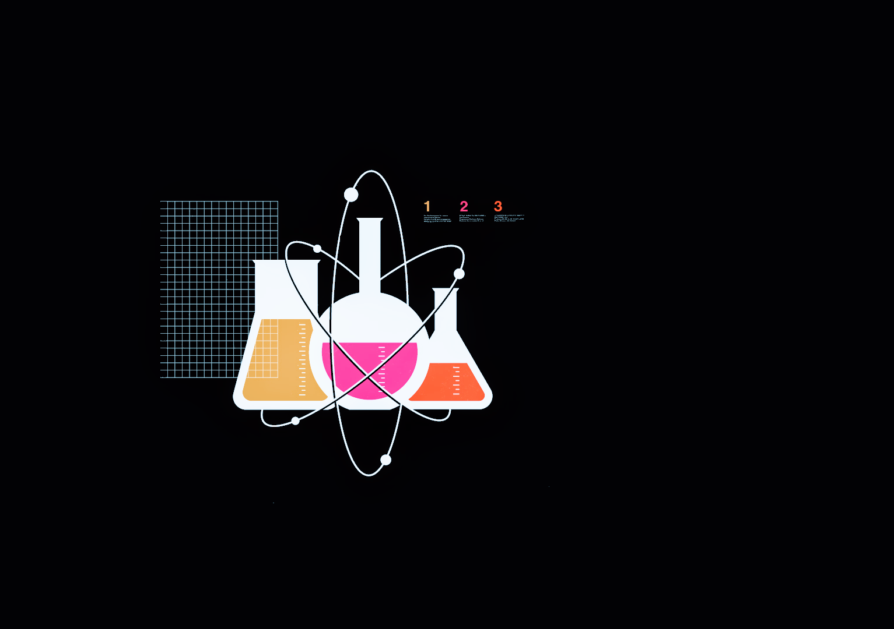

Ensino Médio: Anglo Cassiano Ricardo
editado em 26/10/2017
Durante o Ensino Médio pude participar de olímpiadas de matemática e física, tais como a Canguru Sem Fronteiras e a Olimpíada Brasileira de Física, nas quais pude desenvolver o raciocíno lógico e matemático, bem como adiquirir experiência em competitividade . Além disso participei da IV Edição do São Paulo Model United Nations, na qual, participando do Comitê de Ciência e Tecnologia para o Desenvolvimento, obtive conhecimentos tanto de oralidade quanto de Energia Nuclear, assunto que norteava a reunião do commitê naquele momento.